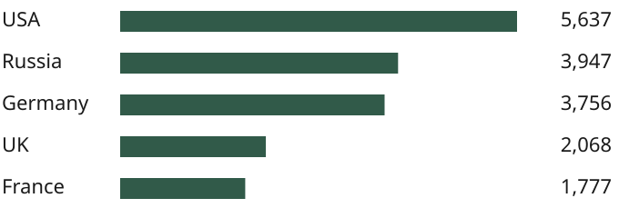
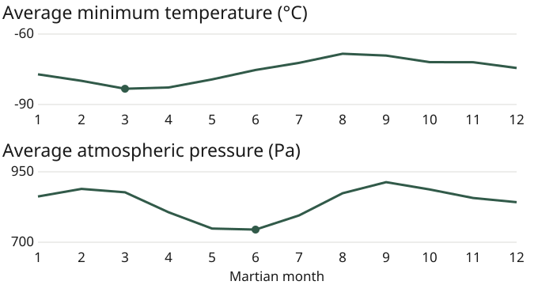

Arizona State University business data analytics student. Selected Python projects from the Global Career Accelerator.
ASOS Revenue
Comparing months of different lengths
The Business Question
Which month performed best in the course dataset, and does the answer change when we compare revenue per week?
What Was Messy
Some weekly revenue values were stored as numbers and others as text. The months also contained different numbers of weeks, so monthly totals alone could give the longer month an advantage.
The Key Finding
July led on both measures at £384 million total and £76.8 million per week. August was close at £372 million total and £74.4 million per week. July’s lead held after accounting for the number of weeks.
Course dataset revenue in £ millions
Month
Weeks
Total
Per week
June
4
282
70.5
July
5
384
76.8
August
5
372
74.4
How I Built It
I converted weekly values to integers in Python, grouped them by month, and calculated totals and weekly averages in Jupyter. View calculation code
Olympic Athletes
Checking what a row represents
The Business Question
How do athlete measurements differ between the latest Summer and Winter Games in the dataset? What can the same records tell us about country performance?
What Was Messy
The unit of analysis matters. The country chart counts athlete records, and a single team medal can appear on multiple rows.
The Key Finding
The U.S. had 5,637 athlete records, compared with 3,947 for Russia, in the notebook’s country count. A medal leaderboard would require an event-level count that handles team medals consistently.
Five countries with the most athlete records in the course dataset

How I Built It
I filtered the data by season, Games, country, and medal type in Pandas, then used Plotly to visualize the country counts. View analysis code
Mars Weather
Comparing two seasonal signals
The Business Question
Do the lowest average minimum temperature and the lowest average pressure occur in the same Martian month?
What Was Messy
The notebook uses Martian months for grouping and Earth dates for plotting daily observations. I set the order of the text month labels explicitly so Month 10 wouldn’t appear between Months 1 and 2.
The Key Finding
Month 3 had the lowest average minimum temperature at −83.3 °C. Month 6 had the lowest average pressure at 745.1 Pa. The lows occur in different months in this sample, so a single seasonal marker would miss part of the picture.
Monthly averages from the course observations

How I Built It
I grouped observations by Martian month with Pandas and used Plotly to chart monthly averages and daily trends for both measures. View analysis code